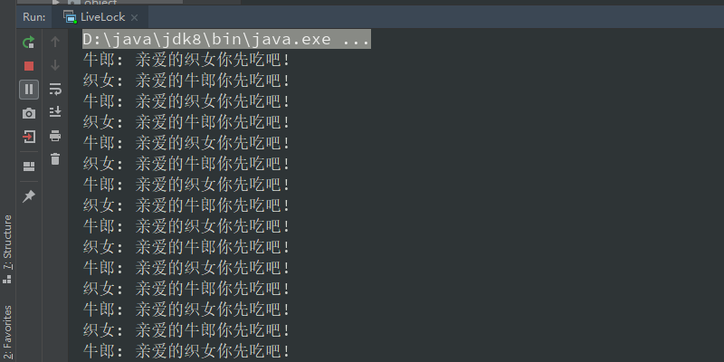
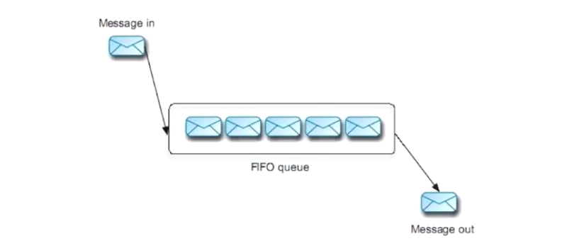
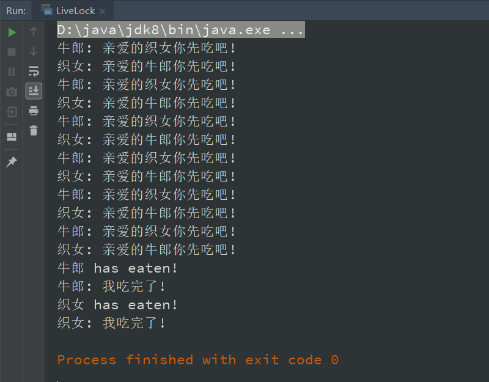
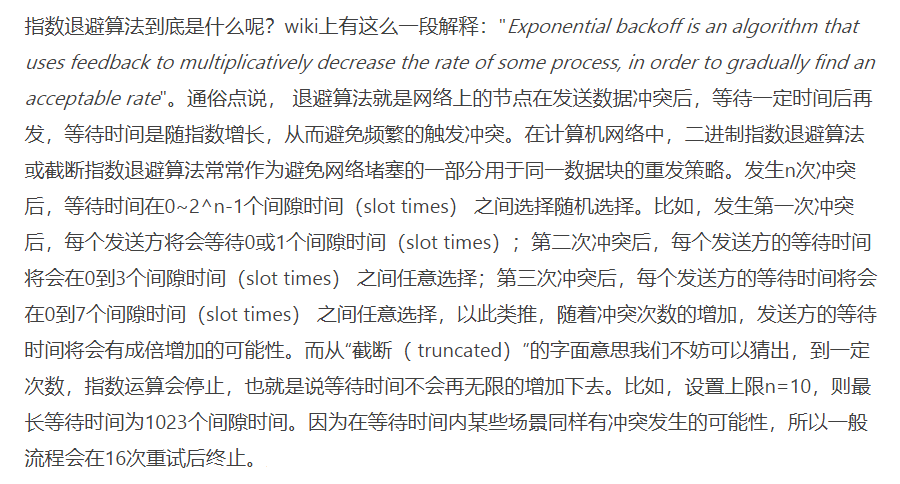

死锁是最常见的活跃性问题，除了死锁之外，活锁和饥饿也会导致程序无法顺利执行，一般将死锁、活锁和饥饿统称为活跃性问题（也称为活性故障）。
1.死锁（DeadLock）
2.活锁（LiveLock）
①什么是活锁
- 死锁：是指两个（或多个）线程（或进程）相互持有对方所需要的资源，又不主动释放，导致大家都无法继续前进，程序陷入无尽的阻塞。
- 比喻 1：如上图所示，绅士 1 说：你先，先生。绅士 2 说：还是你先，先生。然后他们不再说话，一直等待。
- 比喻 2：在哲学家就餐问题中，每个哲学家都拿着左边的叉子，永远都在等右边的叉子（或者相反）。
- 程序阻塞，不需要消耗 CPU 资源。
- 活锁：（用两个线程举例）是指线程 1 可以使用资源，但它很礼貌，让线程 2 先使用资源。线程 2 也可以使用资源，但它很绅士，让线程 1 先使用资源。这样你让我，我让你，最后两个线程都无法使用资源。
- 比喻 1：如上图所示，绅士 1 说：你先，先生。绅士 2 说：还是你先，先生。绅士 1 继续说：还是你先，先生。绅士 2 继续说：…… 双方一直在互相谦让，但是都不会起来。
- 比喻 2：在哲学家就餐问题中，每个哲学家同时拿起左边的叉子，等待五秒钟后（检测到发生死锁），同时放下手中的叉子，再等待五秒钟后，又同时拿起左边的叉子 …… 一直都吃不到饭。
- 程序一直在运转，需要消耗 CPU 资源。
- 虽然线程没有阻塞，也始终在运行（所以叫做 “活” 锁，线程是 “活” 的），但是程序却得不到进展，因为线程间始终在互相谦让。
- 死锁和活锁的结果是一样的 -> 都使得线程无法正常运行。
②代码演示
- 具体代码如下：
1 | package threadcoreknowledge.deadlock; |

③工程中的活锁实例：消息队列

- 上图为一个先进先出的消息队列
- 错误策略：某个消息如果处理失败，就放在队列开头重试。此时如果依赖服务出了问题，无法成功处理该消息，会导致程序不停地重试。
- 解决方法：
- 将处理失败的消息放在队列尾部
- 将其他消息处理完成后，再重试之前处理失败的消息。此时即便该消息再次处理失败，也不会对其他消息造成影响。
- 加上重试次数的限制（根据业务的不同选取合适的次数）
- 达到重试次数上限后，我们可以认为该消息短时间内无法恢复了，此时可以将它写到数据库中。对于数据库来说，一旦发现写入了处理失败的消息，一方面会触发报警机制，另一方面会存在定时任务定时重试该消息。
④如何解决活锁问题
- 发生活锁问题的原因：重试机制不变，导致程序一直重试（如消息队列始终重试、吃饭始终互相谦让等）。
- 解决活锁问题 1：在程序中加入一个随机因素，让重试策略更加多元化。
- 解决 2.活锁 — ②代码演示 中的活锁问题：
1 | package threadcoreknowledge.deadlock; |

- 解决活锁问题 2：以太网的指数退避算法（如下图所示）
- 解决哲学家就餐问题中的活锁问题：当陷入死锁时，让每个哲学家等待一段随机时间后放下叉子，而不是设置一个固定的等待时间。

3.饥饿
①什么是饥饿
- 饥饿：线程需要某些资源（通常指 CPU），但是却始终得不到。
- 饥饿可能会导致响应性变差：比如，浏览器有一个线程负责处理前台响应，另外的后台线程负责下载图片和文件、计算渲染等。在这种情况下，如果后台线程把 CPU 资源都占了，那么前台线程将无法流畅地执行，这会使得用户的体验很差。
②导致饥饿的几种情况
- 线程的优先级设置得过于低（CPU 始终分配给优先级更高的线程）
- 有其他线程持有锁的同时又无限循环从而不释放锁
- 某程序始终占用某文件的写锁
③关于线程优先级
- Java 中有 10 个级别，默认的线程优先级为 5，子线程默认继承父线程的优先级。
- 程序设计不应该依赖于优先级。因为不同的操作系统对优先级的理解不一样，Windows 只有 7 个优先级，而 Linux 可能会忽略优先级。如果程序在不同的操作系统上运行的效果不一样，是不符合预期的。
- 操作系统的权限很高，程序的优先级会被操作系统改变。
- 为了避免饥饿现象的发生，不应该在程序中设定优先级。
4.面试常考问题
①什么是活跃性问题？活锁、饥饿和死锁有什么区别？
具体见 上文
- 活跃性问题：一般将死锁、活锁和饥饿统称为活跃性问题（也称为活性故障），它们都会导致程序无法顺利执行。
- 死锁：争来争去 谁也得不到
- 活锁：让来让去 谁都不拥有
- 饥饿：排多久 都轮不到自己
附录
- 我的个人博客：messi1002.top
- 如有错误或疑惑之处 请联系 wjymessi@163.com